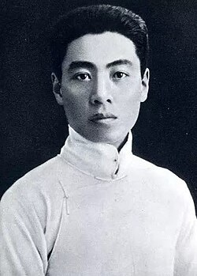

周恩来
周恩来（1898—1976），天津人，中华人民共和国开国总理，中国共产党卓越的政治家、外交家和革命家。他长期从事革命工作，为中国革命和国家建设作出了杰出贡献。
周恩来以卓越的政治智慧和无私奉献著称，在抗日战争、解放战争及新中国建设中发挥了关键作用。他注重团结协作，善于协调各方力量，为国家稳定与发展提供了重要保障。
在家庭生活中，周恩来强调诚实、勤俭、正直和责任感。他教育子女及身边青年要忠于国家、勤勉工作、服务人民，身体力行，以身作则形成深厚家风。
周恩来的家风和革命精神，为天津及全国红色教育提供了宝贵榜样。他的事迹和理念激励了一代又一代人，为国家富强和民族复兴不懈奋斗。
← 返回中国地图